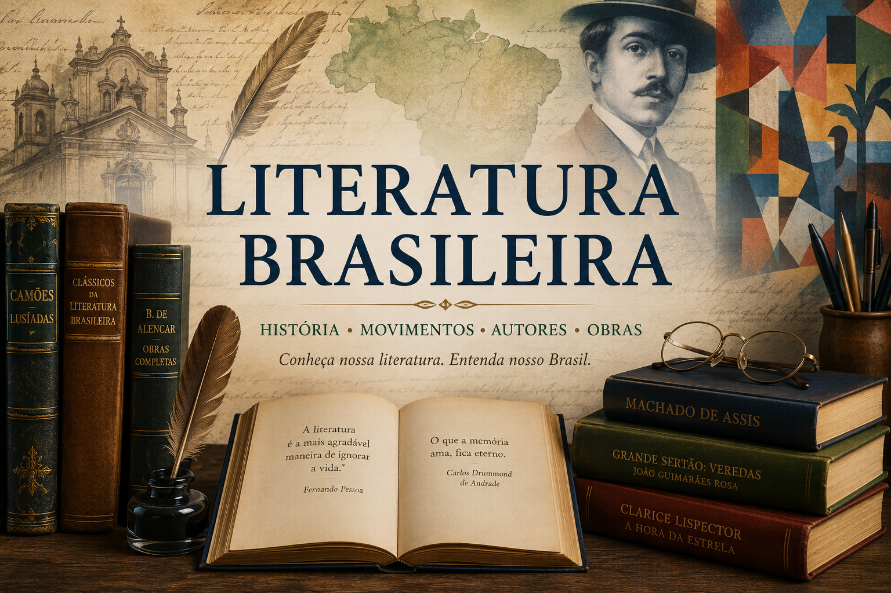

Graciliano Ramos: Biografia, Obras, Características e Importância no Modernismo Brasileiro
Conheça a trajetória de Graciliano Ramos, autor de Vidas Secas, São Bernardo, Angústia e Infância. Entenda suas principais características literárias, sua importância para a Segunda Geração Modernista e a relevância da obra Infância para o PAES UEMA 2027.
Literatura Brasileira: autores, obras e Arcadismo no Brasil
Nesta segunda página da seção de Literatura Brasileira, você encontrará conteúdos sobre importantes escritores, suas trajetórias, principais obras, características literárias e relações com diferentes períodos da literatura produzida no Brasil.
Os estudos abordam autores como Graciliano Ramos, Cora Coralina, Ceres Costa Fernandes e Euclides da Cunha, além das características, autores e obras do Arcadismo no Brasil.
Os materiais auxiliam na preparação para o ENEM, PAES UEMA, vestibulares, concursos públicos e avaliações escolares, relacionando biografia, contexto histórico, estilo e análise literária.

O que você encontrará nesta página
- Graciliano Ramos e a Segunda Geração Modernista;
- Biografia e principais obras de Graciliano Ramos;
- Cora Coralina e a valorização da memória e da cultura popular;
- Meu Livro de Cordel no PAES UEMA 2027;
- Ceres Costa Fernandes e a literatura maranhense;
- Crônicas de Lucy Teixeira no PAES UEMA 2027;
- Euclides da Cunha e o Pré-Modernismo;
- Contexto e estrutura de Os Sertões;
- Contexto histórico e características do Arcadismo;
- Autores e principais obras do Arcadismo no Brasil.